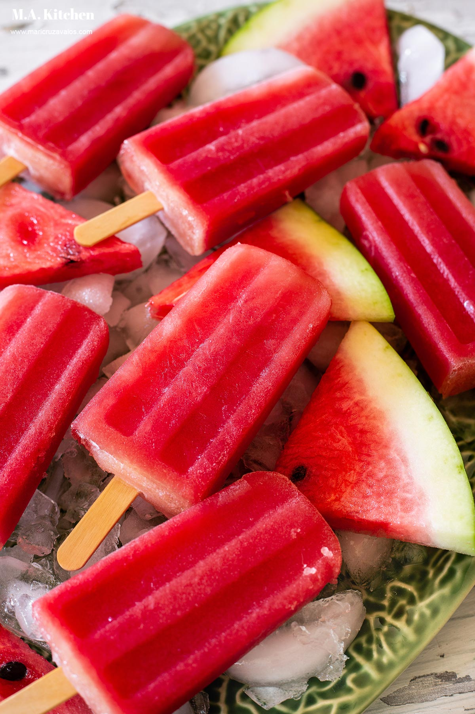

This recipe is a good food to do in hot days
Mix water and sugar in a small saucepan and bring to a boil, stirring to dissolve sugar, about 5 minutes. Remove from heat and let cool.
Blend sugar syrup, watermelon, mint, lime juice, lime zest, and salt in a blender until liquefied, 1 to 2 minutes. Pour the mixture into 10 ice pop molds.
Freeze paletas for 2 hours and insert wooden sticks or handles into the molds; return to freezer and freeze until solid, 12 to 24 hours.